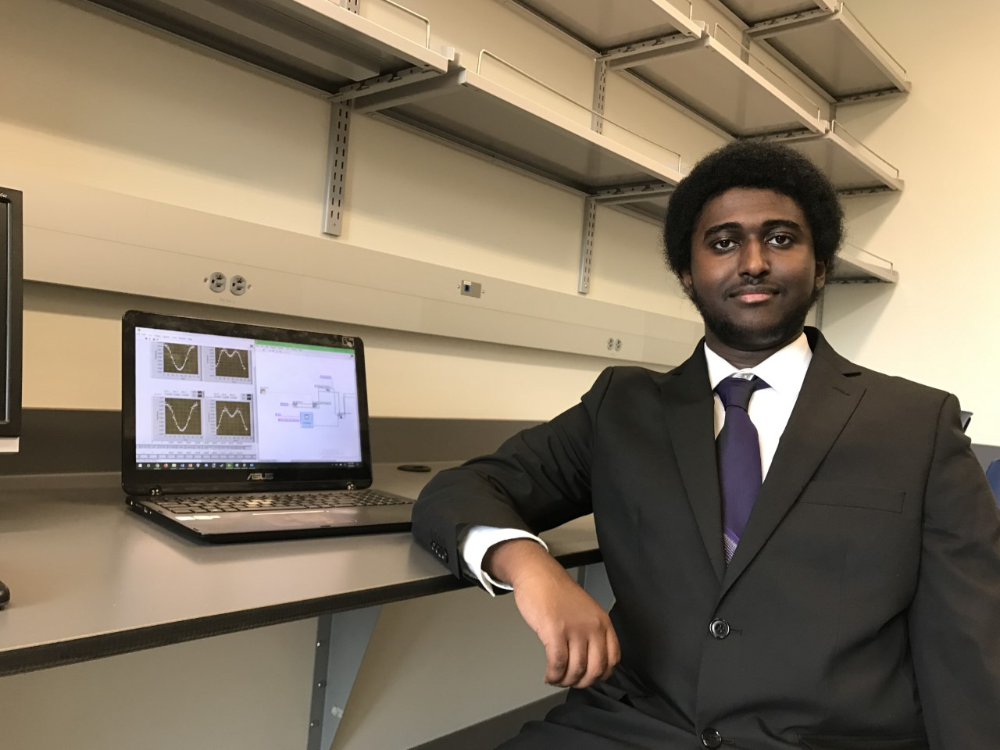
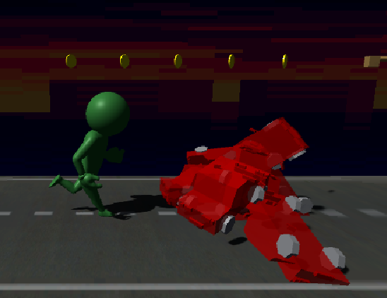

Porfolio :: Software Development
Here you will find a comprehensive overview of my professional experience in the Software Development field, with reference links when possible.
For a wider, albeit less comprehensive, overview of my career spanning all fields, feel free to visit my LinkedIn page: https://www.linkedin.com/in/gheleb-netabai
If you are looking for my professional references, you can find them under the appropriate navbar tab above or by clicking here.
Certifications
| Certification Title | Description | Current | Outdated |
|---|---|---|---|
| Software Application Developer CT | Software application develpoment certification for Python programming language, web application, mobile application, and game application (via Unity & C#) development; assessed and completed under IvyTech Community College. See here for a comprehensive list of all certified program competencies. | ✓ | |
| Java | Java programming language certification, assessed by College Board. | X | |
| C++ | C++ programming language certification, assessed by College Board. | X |
Those interested in exploring the files of (most) projects referenced on this please, please refer to my public github page linked here: https://github.com/gnetabai
Chemistry Research Study
January 2019 - May 2019

In collaboration with Wei Wei, Ph.D.
During my Sophomore year at Franklin College I assisted a professor, whom I'd previously taken Chemistry with, in programming LabVIEW software for a research study he and his colleagues had conducted prior. My participation in this chemistry research study involved first familiarizing myself with the coding language of LabVIEW before programming a more efficient data-storage/recall system for a laser data analysis program [Pictured right] that they'd previously utilized to support their research findings.
Employee Management Log System
May 2023 - July 2023
Development Team: G. Netabai, J. Hollenbach, T. Holeton, C. Hochgesang.
GitHub Repo Link: Click Here
During the Summer 2023 semester of my Software Application Dev. CT program at IvyTech Community College, I and a group of 3 peers worked over a 7 week period to develop an employee management log web application. As the code development lead, I oversaw the application's Python Django development across the project lifespan. Over the course of the dev period, I also lead the team through QA testing, as well as provided support in other project areas such as UI and SQL database design where needed. Project development was conducted via separate Git branches split between team members, with coordinated pushes via a development schedule mapped over e-mail, discord, and Trello boards.
The application system was developed with the intention to service managers of small, non profit companies in need an easy clock in-and-out program, while allowing the admin access to the views of employee punch times and dates. This system also tracks and displays PTO time and any requests off that the manager can then accept or decline. These requests and punches send information to a custom implemented database that stores and processes the web application's data for all employees. It also implements functionality to track employee information via personalized ID codes, which also enable ease of addressing and disabling employee access in the event of termination.
A tutorial video displaying the functionality and layout of the core web application has also been attached, for your viewing convenience. (If the above embed does not display on your device, you can also find it here) Narration is provided by C. Hochgesang, Database Design lead of the project team.
Project: Supersonic (2023)
May 2023 - July 2023

A prototype microgame, created in Unity Game Engine
GitHub Repo Link: Click Here
Project: Supersonic is an “Auto Runner”-style 2D platformer game I created as one of the final projects for my Software Application Dev. CT program at IvyTech Community College. A solo project, this game prototype was completed over the course of approximately 4 weeks (Although the scope, design, and mechanics of the game were outlined in a white page in the weeks prior) with the goal of crafting a 60 second, bug-free 2D platforming experience. While the initial course guidelines advised us to utilize Unity's native visual scripting implement for programming the game's system, I took the time to familiarize myself with the underlying C# code to better manipulate the game's design. In play, the player must use quick reflexes to dodge oncoming obstacles, enemies, and area hazards while racing through the cityscape environment to reach exciting new levels of speed and save the day. Creative commons assets for the game were sourced for assets such as the car models, road textures, music, and SFX; but VFX and models for the game were implemented either from Unity's default asset library or with custom assets developed by me.
Game Synopsis: Drag and click the left mouse button up and down to control Sonic-Man! Race through the ravaged highway to catch up with Dr. Doomsday. Avoid his shrinking wreckages and use your superpowers to increase in size with each successful dodge, until you're powerful and fast enough to grab all three golden keys and get through to the next area. Do you have the moves to save the day?!